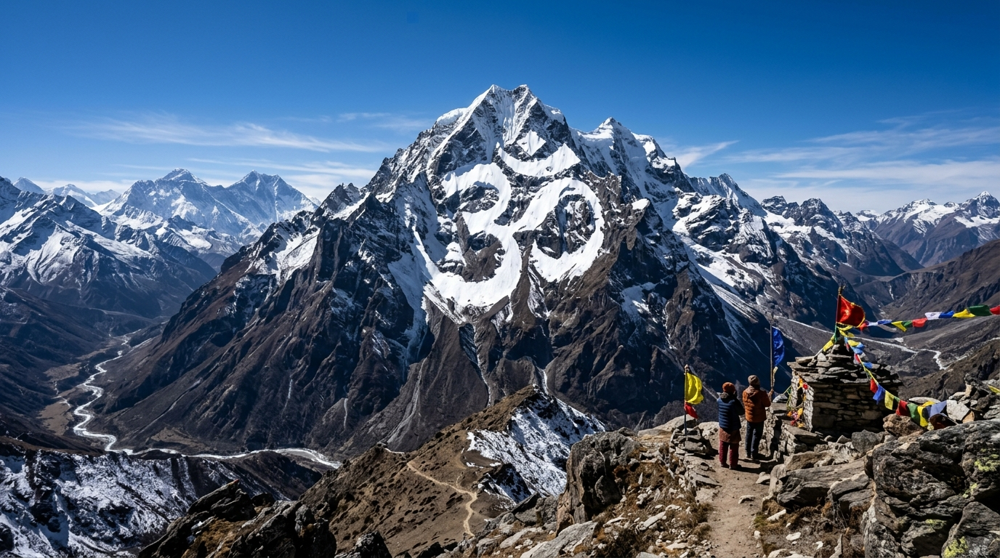
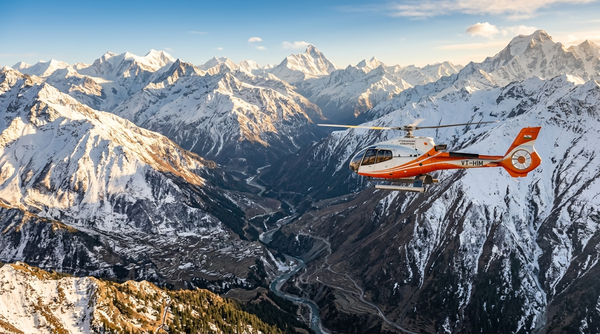
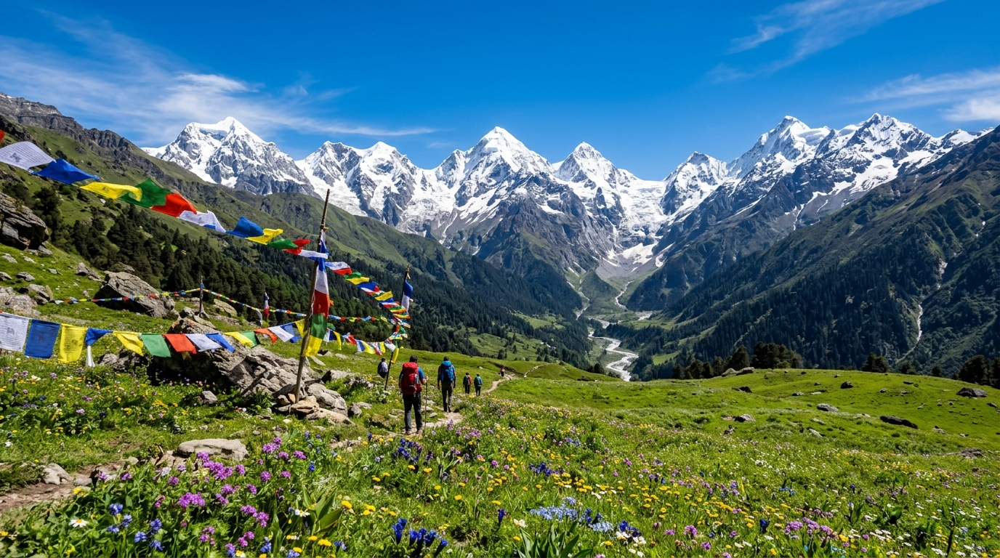

Complete Adi Kailash & Om Parvat Circuit 7 Days / 6 Nights · Kathgodam to Kathgodam
The ultimate sacred Kumaon pilgrimage. From Kathgodam railway station, journey across Kainchi Dham (Neem Karoli Baba), Jageshwar Jyotirlinga, through rugged high-altitude passes to the sanctum of Mount Adi Kailash, Parvati Sarovar, and miraculous Om Parvat.
⏱️ 7 Days / 6 Nights🏔️ Max Alt: 14,950 ft (Jolingkong)🚙 4x4 Mountain Cruiser💰 All-Inclusive ₹38,500 / Person🛡️ 100% ILP & ITBP Clearance
Circuit Overview & Why It's Most Popular
The 7 Days / 6 Nights Complete Circuit is our flagship and most sought-after pilgrimage package. It is designed to relieve yatris of all logistics from the moment they step off the train at Kathgodam Railway Station until their return.
This itinerary is carefully engineered for gradual altitude acclimatization. You travel through the lush valleys of Nainital and Almora, visit world-renowned spiritual shrines en route, and ascend smoothly into the Vyas Valley to behold the primordial abodes of Lord Shiva.
Highlights of this 7-Day Sacred Journey:
• Kainchi Dham Ashram: Seek blessings at the holy tapobhumi of revered saint Neem Karoli Baba.
• Jageshwar Dham: Explore the 8th-century cluster of 124 stone temples dedicated to Shiva.
• Mount Adi Kailash (5,945m): Direct 4x4 road darshan up to Jolingkong Basecamp.
• Parvati Sarovar & Gauri Kund: Holy glacial lakes reflecting the sacred peak.
• Mount Om Parvat (6,191m): Full view of the naturally formed snow 'ॐ' at Nabhidhang.
• Sheshnag Parvat & Kali Mandir: Sacred river origins and legends at Kalapani.
Detailed Day-by-Day Itinerary
Every day is scheduled with optimum drive times, security clearances at ITBP checkposts, and adequate rest to prevent altitude sickness (AMS).
01
Kathgodam to Dharchula via Kainchi Dham
Altitude: 915 mDrive: 280 km (8-9 hrs)
Stay: Hotel / Guest House in Dharchula
Meals: En-route Lunch & Sattvic Dinner
Vehicle: Dedicated Hill Fleet
Morning pickup from Kathgodam Railway Station. Stop at Kainchi Dham (Neem Karoli Baba Ashram) in Bhowali for morning meditation. Continue along the picturesque mountain roads passing Almora and Pithoragarh, following the Kali River into the border town of Dharchula. Evening briefing and initial document verification for your Inner Line Permit.
02
Dharchula to Gunji / Nabi Village via Chialekh Pass
Altitude: 3,200 mDrive: 75 km (5-6 hrs)
Stay: Traditional Wooden Homestay in Gunji/Nabi
Meals: Breakfast, Hot Lunch & Dinner
Vehicle: 4x4 Mountain Cruiser
Board our rugged 4x4 mountain cruisers. Traverse the newly built Himalayan road hugging the Kali River through Malpa and Najang. Ascend the dramatic hairpins of Chialekh Pass (ITBP Permit checkpost) and emerge into the broad, flower-filled alpine plateau of Vyas Valley. Check-in to traditional Rung Bhotiya homestay for rest and acclimatization.
03
Gunji to Mount Adi Kailash, Parvati Sarovar & Back
Altitude: 4,550 mDrive: 35 km each way
Stay: Traditional Homestay in Gunji/Nabi
Meals: Early Breakfast, Packed/Hot Lunch, Dinner
Vehicle: 4x4 Cruiser to Jolingkong
Early morning drive towards Jolingkong. Behold the majestic pyramid of Mount Adi Kailash (5,945 m) standing directly ahead. Walk or take a pony to Parvati Sarovar (4,500 m) to perform Shiva puja and collect holy water. Devotees may hike further to sacred Gauri Kund at the mountain base. Return to Gunji/Nabi by evening for hot sattvic dinner.
04
Gunji to Om Parvat (Nabhidhang) & Kalapani Darshan
Altitude: 4,250 mDrive: 22 km each way
Stay: Traditional Homestay in Gunji/Nabi
Meals: Breakfast, Lunch & Dinner
Vehicle: 4x4 Cruiser
Depart at dawn for Nabhidhang. As the morning sun lights the black granite face of Mount Om Parvat (6,191 m), witness the miracle of snow naturally forming the sacred syllable 'ॐ'. On the return leg, visit the historic Kali Mata Temple at Kalapani, gaze at Sheshnag Parvat, and witness the underground natural spring source of the holy Kali River.
05
Gunji / Nabi to Dharchula Descent
Altitude: 915 mDrive: 75 km (5-6 hrs)
Stay: Hotel in Dharchula
Meals: Breakfast, Lunch & Dinner
Vehicle: 4x4 Mountain Cruiser
After breakfast and farewell to your village homestay hosts, descend back through Chialekh Pass and Najang gorges. Arrive in Dharchula by afternoon. Enjoy the evening strolling across the international suspension bridge over the Kali River into Darchula (Nepal) with simple security entry.
06
Dharchula to Jageshwar Dham via Pithoragarh
Altitude: 1,870 mDrive: 210 km (7 hrs)
Stay: Resort / Hotel in Jageshwar
Meals: Breakfast, Lunch & Dinner
Vehicle: Hill Cruiser
Drive through the charming green hills of Kumaon towards the ancient temple complex of Jageshwar Dham, nestled amidst towering Deodar cedar forests. Attend the serene evening Maha Aarti at the Jyotirlinga shrine.
07
Jageshwar to Kathgodam Drop-off
Altitude: 550 mDrive: 120 km (4-5 hrs)
Stay: Journey Concludes
Meals: Breakfast & Farewell Tea
Vehicle: Transfer to Railway Station
Morning Rudrabhishek puja at Jageshwar Temple. Drive through Almora and Bhowali, arriving at Kathgodam Railway Station by 4:00 PM for your onward train journeys back home with eternal blessings of Mahadev.
Package Inclusions & Exclusions
What Is Included
Kathgodam to Kathgodam all transport in dedicated 4x4 vehicles.
6 Nights accommodation (Hotels in Dharchula/Jageshwar & Homestays in Gunji/Nabi).
All Pure Sattvic Vegetarian meals (Breakfast, Lunch, Dinner, Evening Tea).
Medical first-aid kit, pulse oximeter & emergency oxygen cylinder support.
All toll taxes, fuel, driver allowances & state permits.
What Is Excluded
Train / Flight tickets up to Kathgodam and return.
Pony or horse charges at Parvati Sarovar (approx. ₹1,200–₹1,800 if hired).
Personal expenses, mineral water bottles, laundry, telephone charges.
Costs arising from landslides, weather roadblocks or natural events.
Personal travel and medical insurance.
Frequently Asked Questions for 7-Day Circuit
Kathgodam is the railway terminus of Kumaon, directly connected to New Delhi by the Ranikhet Express (Overnight), Kathgodam Shatabdi Express, and Uttarakhand Sampark Kranti. You can also fly to Pantnagar Airport (70 km from Kathgodam) or take overnight Volvo buses from Anand Vihar ISBT, Delhi.
Because 4x4 vehicles travel up to Jolingkong Basecamp, strenuous trekking is not required. You only need to walk 1.5 to 2 km over gentle alpine terrain to reach Parvati Sarovar (ponies are readily available for senior citizens). A basic medical fitness certificate from an MBBS doctor is mandatory for the permit.
BSNL postpaid and prepaid SIMs have the best coverage in Gunji and Kalapani. Jio 4G towers are newly operational in Gunji and Nabi villages. Airtel works reliably up to Dharchula, but drops in higher valleys.
🕉️ Explore Alternatives
Explore Other Yatra Packages
Looking for a shorter stay, helicopter aerial darshan, or dual-valley expedition?

5 Days / 4 Nights
Dharchula → Gunji → Nabi → Dharchula
Adi Kailash & Om Parvat Essential
Ideal for yatris arranging their own transport to Dharchula. Covers both holy peaks thoroughly.

3 Days / 2 Nights
Pithoragarh → Jolingkong / Gunji Heli Base
VIP Helicopter Adi Kailash & Om Parvat
Senior-citizen friendly express chopper darshan with priority VIP clearance and medics.

8 Days / 7 Nights
Adi Kailash + Om Parvat + Darma Valley
Grand Kumaon & Panchachuli Expedition
Dual-valley wonder covering sacred Vyas Valley and dramatic Panchachuli peaks in Darma Valley.
Reserve Your 2026 Yatra Slot
Expert local coordinator will contact you with day-wise itinerary & permit details